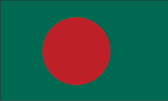
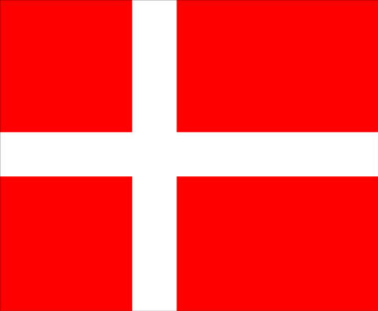
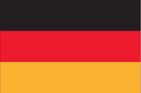
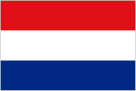
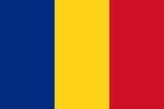
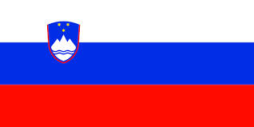

Australia
Bitcoin Association of Australia
We seek to reduce knowledge barriers to entry, thereby growing the Bitcoin ecosystem. For individual and institutional users we provide objective, fair and balanced practical information, consultation and advice. We seek to protect the local users in the community by bringing a necessary level of conformity. To that end we create content, standards and guidelines of best practice for interacting with the technology.
Bangladesh
Bitcoin Bangladesh
Bitcoin Bangladesh aims to educate people in the community about Bitcoin, how it's used, and to encourage adoption. The foundation intends to be a pioneer in the community. There is not a lot of Bitcoin activity in Bangladesh as of yet. With no restrictive laws and no easy way to convert "Taka" to Bitcoin, the organization hopes to change this for the better.
Canada
Bitcoin Foundation Canada
Bitcoin Foundation Canada (BFC) is a member-driven not-for-profit corporation which seeks to standardize, protect, and promote Bitcoin in Canada. Our mission is to act as an organizing body that coordinates and defends the interests of our members. We will represent Canada's Bitcoin community in a professional, inclusive and transparent manner.
Denmark
Dansk Bitcoinfonening
I Danmark er der en gruppe af mennesker, som er interesserede i Bitcoin. Vi samler denne gruppe, og hjælper dem med deres projekter og interesser. Nogen er interesseret i netværk, andre i viden, nogen i kapital og andre vil gerne til Bitcoin arrangementer og diskutere. Dansk Bitcoinforening faciliterer dette sammenhold, og hjælpe medlemmer i den rigtige retning.
France
Bitcoin France
L’association a pour mission de promouvoir la technologie Bitcoin et son écosystème. Pour se faire elle aidera le développement de ses applications et de ses usages, en France et en Europe. L’association planifie d’entretenir des actions de communication aurpès des acteurs économiques concernés, mais aussi les pouvoirs public, le grand public et les médias.
Germany
Bundesverband Bitcoin
Der Bundesverband will die Interessen von Bitcoin-Nutzern und Unternehmen der noch jungen Bitcoin-Ökonomie vertreten und helfen, die gesellschaftsweite Etablierung der neuen Technologie zu moderieren.
Mexico
Fundación Satoshi Nakamoto
El uso de Bitcoin en México y en el mundo es una tendencia a la alza. La necesidad de educación, estandarización, protección y promoción de Bitcoin a un nivel local se ha convertido en algo primordial. Nuestra misión es crear una comunidad de Bitcoin fuerte, informada, de individuos, negocios e instituciones.
The Netherlands
Stichting Bitcoin Nederland
Nederland heeft een rijke historie op financieel gebied en Nederlanders staan bekend als een inventief en open-minded volk. Er is dus een belangrijke rol weggelegd voor Nederland binnen de wereld van cryptocurrencies. Wij als Stichting Bitcoin Nederland zetten ons dan ook in om bitcoin te beschermen en te verbeteren. Ook Wetenschappelijk onderzoek, educatie en promotie van bitcoin beschouwen wij als onze taak.
Romania
Fundatia Bitcoin Romania
Fundatia Bitcoin România își propune să promoveze moneda digitală Bitcoin și tehnologia din spatele ei (protocol Bitcoin). Principalele activități ale fundației includ informații de interes public, construirea unei comunități puternice Bitcoin, sprijinirea întreprinderilor și proiecte care folosesc sau doresc să folosească Bitcoin și la punte de comunicare cu mass-media.
Slovenia
Bitcoin Intitut
Freedom, equality and independence are synonyms Bitcoin has offered widely and it will show in the future it has the capacity to offer a new monetary standard. The leadership team of Bitcoin Foundation, Slovenian Chapter will play a key part of this development force to ensure the wide adoption of Bitcoin in Slovenia and the world.